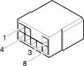

D61C Pretensioner connection ( PRETENSIONERS )
- Path
- Electrical equipment > Connectors > D Intermediate couplings > D61 Pretensioner connection > D61C Pretensioner connection ( PRETENSIONERS )
- Kind
- connector pinout (pin -> wire colour -> other end)
- Applies to
- engines: 1.6 TS , 1.8 TS, 2.0 JTS, 2.5 V6, 3.2 V6, 1.9 JTD 8v , 1.9 JTD 16v, 2.0 JTS, 2.4 JTD 10v, 2.4 JTD 20v; production: fino a 03/98, da 04/98 a 02/99, da 03/99 a 01/00, da 02/00 a 01/01, da 02/01 a 02/02; only with equipment: Air Bag laterale
- Interactive page
- https://sloeber94.github.io/elrnDB-a156/en/#/3235832
Applies to: engines: 1.6 TS , 1.8 TS, 2.0 JTS, 2.5 V6, 3.2 V6, 1.9 JTD 8v , 1.9 JTD 16v, 2.0 JTS, 2.4 JTD 10v, 2.4 JTD 20v; production: fino a 03/98, da 04/98 a 02/99, da 03/99 a 01/00, da 02/00 a 01/01, da 02/01 a 02/02; only with equipment: Air Bag laterale

Wiring | Colour |
|---|---|
BIANCO (white) |